Películas LGTB+ que no puedes perderte
Una selección imprescindible para entender la diversidad en el cine


En las últimas décadas, el debate sobre la representación femenina en el cine ha ganado fuerza, y con él ha resurgido una herramienta tan simple como reveladora: el Test de Bechdel. Creado por la dibujante Alison Bechdel en 1985, este test propone tres condiciones básicas para medir la presencia de mujeres en una película: que aparezcan al menos dos personajes femeninos con nombre, que hablen entre sí y que su conversación no gire en torno a un hombre. Aunque estas reglas pueden parecer casi triviales, su aplicación deja al descubierto una realidad incómoda: una enorme cantidad de películas, incluso las más premiadas o taquilleras, no logran cumplirlas. El test, más que una medida definitiva del feminismo en el cine, se ha convertido en un termómetro cultural que nos permite observar cómo y cuándo las mujeres son relegadas a papeles secundarios, accesorios o definidos en función de los hombres.
Ahora te invitamos a mirar más de cerca aquellas películas que sí superan el Test de Bechdel y que, además, aprovechan esa representación mínima para construir personajes femeninos ricos, complejos y auténticos. A través de ejemplos que van desde dramas independientes como Lady Bird hasta producciones de acción como Mad Max: Fury Road o cintas históricas como Hidden Figures, se explora cómo las mujeres pueden ser protagonistas de sus propias historias sin depender de estereotipos románticos o roles tradicionales. Más allá de enumerar títulos, el texto reflexiona sobre lo que significa realmente “pasar” el test: no solo cumplir con una lista de condiciones, sino ofrecer narrativas donde las mujeres existan con voz, propósito y profundidad. En definitiva, se trata de entender cómo el cine puede —y debe— evolucionar hacia una representación más justa y diversa de la mitad de la humanidad.R E P R E S E N T A C I Ó N . L É S B I C A
1. Fear Street, PLeigh Janiak (2021)
La trilogía Fear Street ofrece una representación lésbica que destaca por integrarse de manera orgánica en el núcleo narrativo sin reducir a sus protagonistas a meros símbolos. La relación entre Deena y Sam no se plantea como un conflicto en sí mismo, sino como el motor emocional que impulsa la trama y justifica sus decisiones, algo poco habitual en el cine de terror comercial. La historia evita convertir su orientación en un elemento de tragedia, centrándose más en la lealtad, el deseo de supervivencia y la fuerza de su vínculo, lo que contribuye a una representación más normalizada y alejada de tópicos melodramáticos. Además, Fear Street revisita códigos clásicos del slasher desde una perspectiva actualizada y queer, convirtiendo a las jóvenes lesbianas en heroínas activas en lugar de víctimas colaterales. La trilogía utiliza el horror como metáfora del estigma social —especialmente en la parte ambientada en 1666— pero sin caer en la explotación del sufrimiento queer. En su conjunto, la obra reivindica un espacio dentro del género donde las identidades LGBT+ no solo existen, sino que lideran, resisten y sobreviven, algo que la sitúa como un referente reciente en la representación lésbica dentro del terror mainstream.
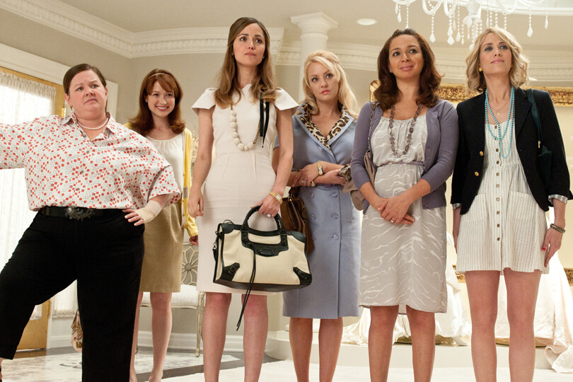2. Frances Ha, Noah Baumbach (2012)
Una película poco habitual en este tipo de listas, pero que refleja de forma brillante las relaciones y conversaciones entre mujeres, es Frances Ha (2012), dirigida por Noah Baumbach y coescrita junto a Greta Gerwig, quien también interpreta el papel principal. La historia sigue a Frances, una joven neoyorquina que intenta abrirse camino como bailarina mientras enfrenta la incertidumbre de la adultez y la precariedad económica. Sin embargo, el eje emocional de la película no está en el amor romántico, sino en la amistad entre Frances y Sophie, su mejor amiga. A través de sus conversaciones —a veces triviales, a veces profundamente emocionales— la película retrata con honestidad las transformaciones que sufren las amistades femeninas cuando la vida adulta impone distancias, cambios y nuevas responsabilidades. En lugar de centrarse en relaciones con hombres, la narrativa muestra cómo Frances define su identidad y busca su lugar en el mundo a partir de sus lazos con otras mujeres y con su propio arte. La naturalidad de los diálogos, la ligereza de su tono y la melancolía que impregna toda la historia hacen de Frances Ha una mirada íntima y sincera sobre la independencia, la soledad y la necesidad de conexión. Es una película que demuestra que las historias femeninas pueden ser complejas sin dramatismos exagerados, mostrando que la amistad entre mujeres puede tener tanta profundidad y poder narrativo como cualquier romance cinematográfico.
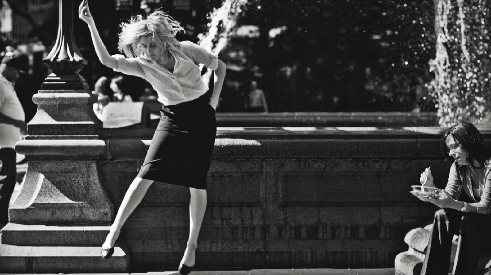3. Little Women, Greta Gerwig (2019)
Una de las películas que cumple con creces el Test de Bechdel es Mujercitas (Little Women, 2019), dirigida por Greta Gerwig, una de las voces más destacadas del cine contemporáneo en materia de representación femenina. La cinta, basada en la clásica novela de Louisa May Alcott, no solo presenta múltiples personajes femeninos con nombre —Jo, Meg, Beth y Amy March, junto a su madre Marmee—, sino que además dedica gran parte de su narrativa a explorar las conversaciones, sueños, frustraciones y dilemas personales de estas mujeres en una sociedad que las limita. A lo largo de la película, las hermanas March hablan de arte, ambición, libertad, dinero, independencia y del papel que desean ocupar en el mundo, temas que trascienden los vínculos románticos y se centran en su identidad individual y colectiva. Jo, interpretada por Saoirse Ronan, encarna la lucha por la autonomía creativa en un contexto patriarcal, mientras que Amy (Florence Pugh) ofrece una visión igualmente compleja sobre el equilibrio entre la vocación artística y la seguridad económica. Lo fascinante es que Gerwig no convierte a sus personajes en símbolos unidimensionales del feminismo, sino que los presenta como mujeres reales, contradictorias, sensibles y determinadas, cuyas decisiones son válidas y respetadas dentro del relato. Además, la dirección y el guion se encargan de otorgarles agencia narrativa, de modo que las mujeres no solo existen dentro de la historia, sino que la construyen con sus acciones y elecciones. En este sentido, Mujercitas no solo pasa el Test de Bechdel de manera formal, sino que lo amplía y lo trasciende, ofreciendo una mirada profunda y honesta sobre la sororidad, la independencia y el deseo femenino de definir el propio destino, consolidándose como una obra que celebra la complejidad y la fuerza de las mujeres sin necesidad de reducirlas a su relación con los hombres.
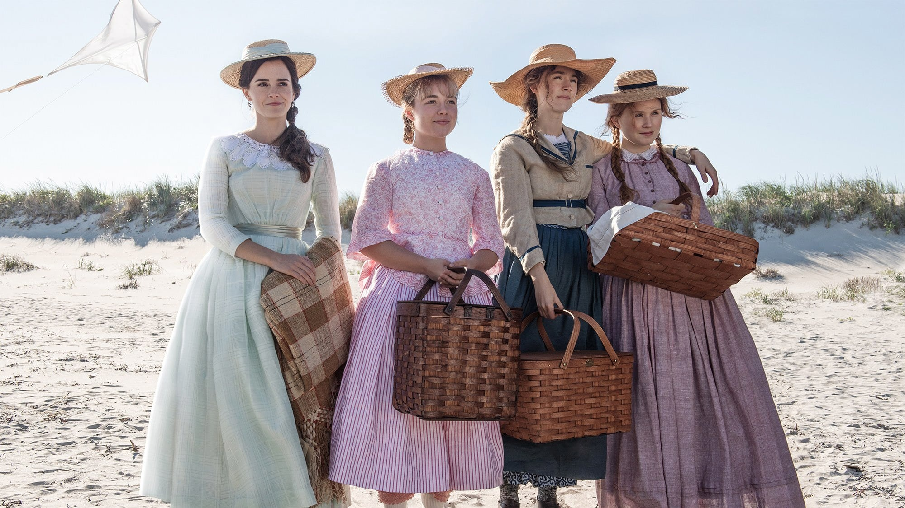4. The Farewell, Lulu Wang (2019)
Una película menos mencionada, pero que también ejemplifica una representación femenina sólida, es The Farewell (2019), dirigida por Lulu Wang. Inspirada en una historia real, la cinta sigue a Billi, una joven china criada en Estados Unidos que regresa a su país natal cuando su familia organiza una falsa boda para despedirse de su abuela, a quien le han ocultado un diagnóstico terminal. Más allá de la emotividad del argumento, lo que hace que esta película destaque es la profundidad y sinceridad de las conversaciones entre mujeres de distintas generaciones. Billi habla con su madre, su tía y su abuela sobre la familia, el deber, la identidad cultural y la diferencia entre las formas orientales y occidentales de entender la vida y la muerte. Estas conversaciones, cargadas de matices y silencios significativos, revelan los distintos modos en que las mujeres enfrentan la pérdida, la memoria y el amor familiar. En The Farewell, los vínculos femeninos no giran en torno a los hombres, sino a la fortaleza emocional, la comprensión y la transmisión de valores entre madres, hijas y abuelas. Lulu Wang construye un retrato lleno de sensibilidad y respeto hacia la complejidad de las mujeres dentro de una cultura marcada por las normas tradicionales, y logra que cada interacción se sienta auténtica y necesaria. Es una historia que demuestra que la representación femenina no siempre necesita grandes gestos o discursos, sino momentos honestos donde las mujeres se escuchan, se acompañan y se entienden.
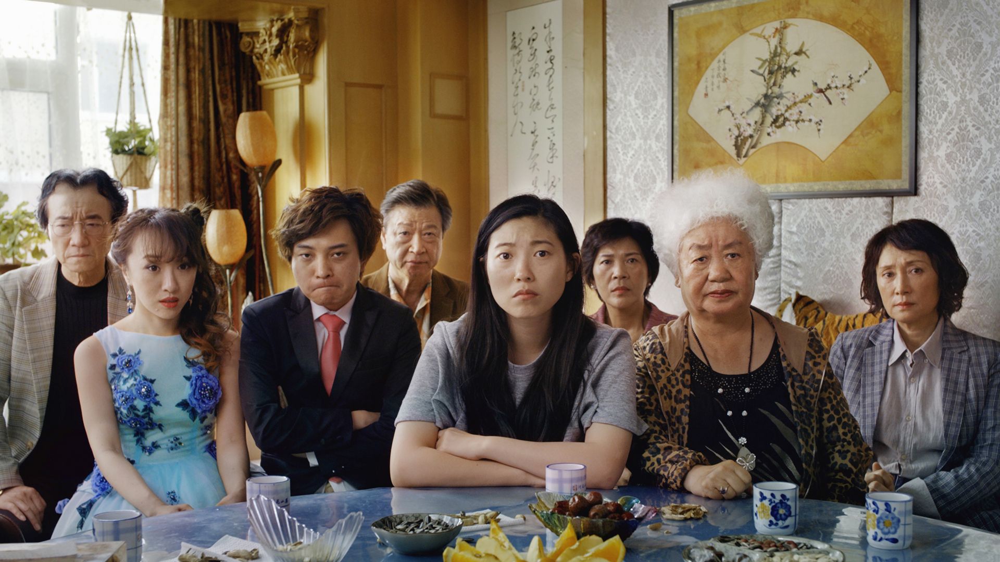5. Figuras ocultas, Theodore Melfi (2016)
Una película que cumple de manera ejemplar el Test de Bechdel es Hidden Figures (Figuras ocultas, 2016), dirigida por Theodore Melfi y basada en hechos reales. La historia sigue a tres mujeres afroamericanas, Katherine Johnson, Dorothy Vaughan y Mary Jackson— que trabajaron en la NASA durante los años sesenta, en plena segregación racial y en un entorno laboral dominado por hombres. A lo largo del film, las tres protagonistas mantienen conversaciones profundas y significativas sobre su trabajo, sus ambiciones y los obstáculos que deben superar para ser reconocidas por su talento, sin que sus diálogos giren en torno a los hombres que las rodean. Más allá de cumplir las condiciones del test, la película destaca por la manera en que retrata la inteligencia, la determinación y la solidaridad femenina en un contexto de desigualdad. Sus interacciones están llenas de apoyo mutuo, humor y una fuerza que impulsa la narrativa, mostrando que el progreso científico y social no habría sido posible sin mujeres como ellas. Hidden Figures no solo visibiliza una parte de la historia que durante décadas fue ignorada, sino que también ofrece una representación honesta y poderosa de la sororidad, la lucha por la igualdad y el derecho a ocupar un lugar merecido en la historia. En ese sentido, la película trasciende el test al presentar a sus protagonistas como verdaderos motores del cambio, demostrando que las mujeres no solo participan en la historia, si no que la crean.
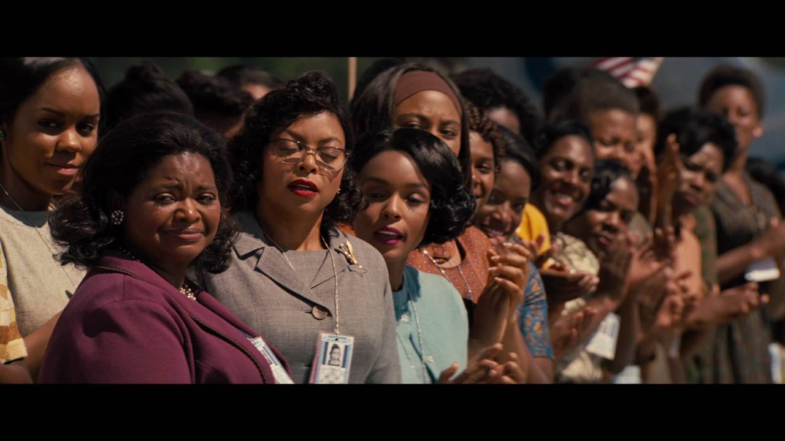R E P R E S E N T A C I Ó N . G A Y
6. Lady Bird, Greta Gerwig (2017)
Entre las películas que mejor representan la fuerza de las conversaciones y vínculos entre mujeres destaca Lady Bird (2017), dirigida por Greta Gerwig. Este retrato íntimo de la adolescencia sigue a Christine “Lady Bird” McPherson, una joven que busca definir quién es mientras lidia con los conflictos familiares, las expectativas sociales y sus propias inseguridades. Lo más valioso de la película está en su retrato de las relaciones femeninas: especialmente la compleja, tierna y a veces tensa conexión entre Lady Bird y su madre, Marion. A lo largo de la historia, ambas hablan de futuro, de dinero, de independencia, de estudios y de lo que significa crecer; sus discusiones, cargadas de amor y frustración, reflejan la profundidad emocional de una relación real. También se destacan las conversaciones entre Lady Bird y su mejor amiga, Julie, en las que se exploran la amistad, la lealtad y la necesidad de apoyo en una etapa de autodescubrimiento. Gerwig logra construir un universo femenino sincero y lleno de matices, donde las mujeres no son definidas por los hombres que las rodean, sino por sus propias experiencias y deseos. En ese sentido, Lady Bird se convierte en una historia sobre la autonomía emocional y la identidad femenina, mostrando que las películas pueden ser conmovedoras, divertidas y profundas sin recurrir a los clichés románticos o dependientes del protagonismo masculino.
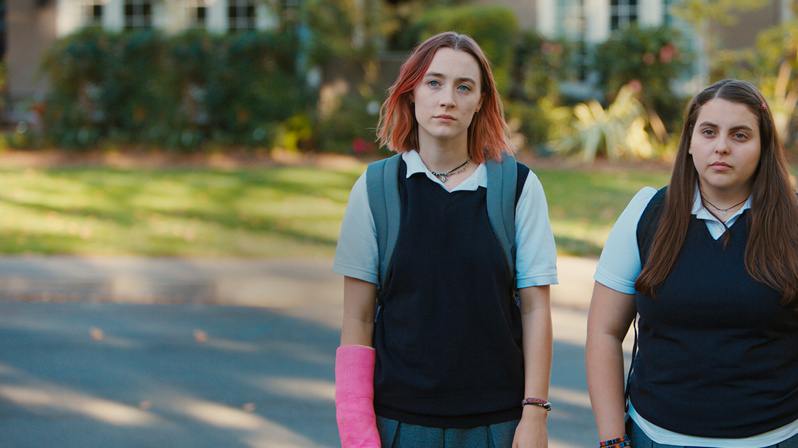7. Little Miss Sunshine, Jonathan Dayton y Valerie Faris (2016)
Una película que destaca por su mirada femenina y por la riqueza de sus personajes es Little Miss Sunshine (2006), dirigida por Jonathan Dayton y Valerie Faris. Aunque se trata de una comedia centrada en una familia disfuncional, las conversaciones y dinámicas entre los personajes femeninos, especialmente entre Olive y su madre Sheryl, ofrecen una visión honesta y sensible de lo que significa crecer y criar en un mundo lleno de expectativas y juicios. A lo largo del viaje hacia el concurso de belleza infantil, madre e hija comparten momentos que giran en torno a la autoestima, los sueños y la importancia de aceptarse tal como uno es. Sheryl, interpretada por Toni Collette, se muestra como una mujer fuerte que intenta sostener a su familia sin perder la ternura ni la esperanza, mientras que Olive, con su curiosidad y autenticidad, desafía los ideales superficiales de belleza que la rodean. La película muestra a las mujeres hablando de temas reales y significativos —el valor, la frustración, la confianza—, construyendo una narrativa donde el afecto y la complicidad femenina se vuelven motores de resistencia y amor propio. Little Miss Sunshine logra combinar humor, crítica social y ternura para recordarnos que las historias sobre mujeres pueden ser profundas sin dejar de ser humanas, y que la fuerza de sus voces radica precisamente en su capacidad para inspirar desde lo cotidiano.

8. The Breadwinner, Nora Twomey (2017)
Otra película poco mencionada pero muy significativa en cuanto a representación femenina es The Breadwinner (2017), dirigida por Nora Twomey y producida por el estudio Cartoon Saloon. Ambientada en Afganistán bajo el régimen talibán, la historia sigue a Parvana, una niña de once años que se ve obligada a disfrazarse de chico para poder trabajar y mantener a su familia después de que su padre sea encarcelado injustamente. A través de una animación delicada y poderosa, la película muestra cómo las mujeres, pese a estar oprimidas por un sistema que las silencia, encuentran formas de resistir y apoyarse entre sí. Parvana comparte conversaciones con su madre, su hermana y otras mujeres que, desde distintos lugares, representan la valentía y la dignidad frente a la injusticia. Sus diálogos giran en torno a la supervivencia, la libertad y la esperanza, temas que se vuelven el verdadero motor de la historia. Lo más notable de The Breadwinner es que combina la dureza de su contexto con momentos de ternura y humanidad, retratando la fuerza femenina no desde la idealización, sino desde la lucha diaria por conservar la voz y la identidad. Lejos de centrarse en los hombres o en el amor romántico, la película reivindica la capacidad de las mujeres para sostener, proteger y transmitir historias, incluso en los entornos más hostiles. Es un relato sobre la resistencia y la imaginación como armas frente al silencio, y sobre cómo las mujeres, unidas por la palabra y la memoria, pueden desafiar cualquier sistema que intente borrarlas.
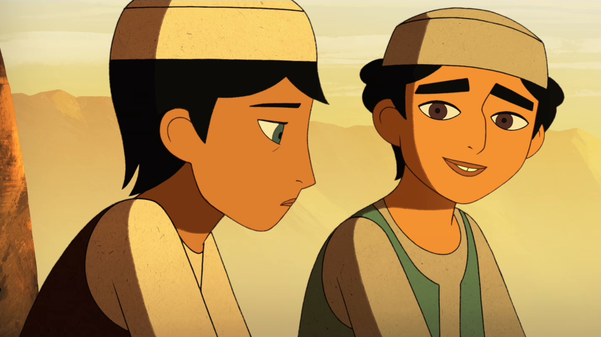9. Mustang, Deniz Gamze Ergüven (2015)
Lejos de los grandes estudios y de las narrativas convencionales, Mustang (2015), de la directora franco-turca Deniz Gamze Ergüven, se alza como una de las representaciones más potentes de la resistencia y la sororidad femenina en el cine reciente. Ambientada en un pequeño pueblo del norte de Turquía, la película sigue la historia de cinco hermanas que tras un inocente juego con unos compañeros de escuela, son castigadas y confinadas en su casa bajo estricta vigilancia familiar. Lo que en apariencia es una historia local se transforma en una poderosa metáfora sobre la represión patriarcal y la pérdida de la libertad femenina. Las conversaciones entre las hermanas están llenas de ternura, complicidad y rebeldía; hablan de la vida que anhelan, de los límites impuestos y de las estrategias que inventan para seguir soñando en medio del encierro. A través de sus diálogos y silencios, Mustang muestra cómo las mujeres pueden encontrar fortaleza en el vínculo compartido, incluso cuando todo a su alrededor busca dividirlas o someterlas. Ergüven filma con sensibilidad y firmeza, capturando tanto la belleza de la infancia como la crueldad de una sociedad que intenta moldear a las niñas en función de las expectativas ajenas. Las hermanas, unidas por el cariño y el deseo de libertad, construyen un refugio emocional dentro del propio cautiverio, desafiando las normas con pequeños actos de desobediencia que se sienten heroicos. En su conjunto, la película no solo ofrece una historia sobre la opresión, sino sobre el poder de la unión femenina y la capacidad de las mujeres para sostenerse mutuamente cuando el mundo parece negarles la voz.
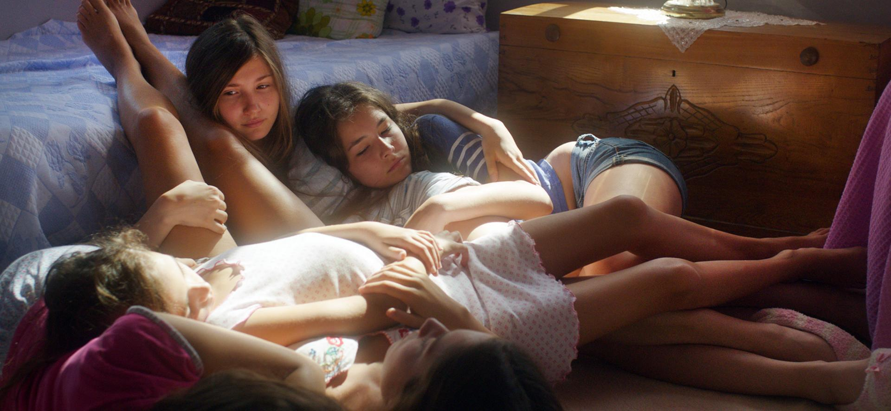R E P R E S E N T A C I Ó N . B I S E X U A L
10. A fantastic woman, Sebastián Lelio (2017)
En un enfoque más íntimo y contemporáneo, A Fantastic Woman (2017), dirigida por Sebastián Lelio, ofrece una representación femenina y transfemenina excepcionalmente poderosa. La película sigue a Marina, una mujer trans que, tras la muerte repentina de su pareja, enfrenta no solo el dolor personal, sino también la hostilidad y el rechazo de la familia de su novio y de la sociedad en general. Gran parte de la fuerza narrativa reside en cómo Marina interactúa con otras mujeres de su entorno: amigas, colegas y figuras de apoyo que la escuchan, la acompañan y le ofrecen consejos que no giran en torno a hombres, sino sobre su identidad, su dignidad y la manera de afrontar la pérdida y la discriminación. Lo que distingue a A Fantastic Woman es cómo convierte estas relaciones en un espacio de resistencia y resiliencia. Las conversaciones femeninas no son superficiales; tratan sobre autonomía, derechos, autoaceptación y solidaridad frente a un mundo que constantemente cuestiona la legitimidad de su existencia. La película combina momentos de intimidad con escenas de confrontación social, mostrando que la fuerza de Marina y de las mujeres que la rodean reside tanto en la acción como en la palabra. Lelio logra un retrato lleno de humanidad, donde cada interacción femenina contribuye a construir la narrativa de empoderamiento y autenticidad de Marina. En este sentido, la película no solo cumple con criterios de representación, sino que los expande, mostrando cómo las mujeres, en toda su diversidad, pueden ser soporte, voz y motor de cambio en una historia profundamente emotiva y necesaria.
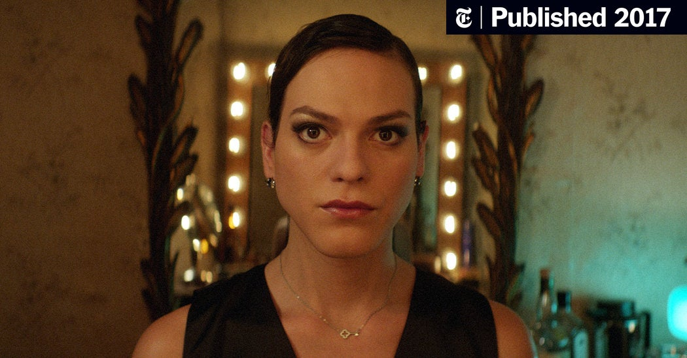11. Thelma & Louise, Ridley Scott (1991)
Thelma & Louise (1991), dirigida por Ridley Scott, es un clásico del cine que combina aventura y drama con un profundo retrato de la amistad femenina. La película sigue a Thelma, una ama de casa, y Louise, una camarera, que deciden escapar de sus vidas rutinarias y opresivas en un viaje por carretera que se convierte en una huida de la ley. Lo central no es la relación con hombres, sino el vínculo que se desarrolla entre ellas: sus conversaciones revelan miedos, sueños y frustraciones, así como la manera en que se empoderan mutuamente frente a un mundo que constantemente las subestima. Cada escena construye un retrato de solidaridad, complicidad y crecimiento personal, mostrando cómo la libertad y la autoafirmación pueden surgir del apoyo mutuo. Con momentos de humor, tensión y emoción genuina, Thelma & Louise es una oda a la amistad femenina y a la fuerza que las mujeres encuentran entre sí en situaciones extremas.
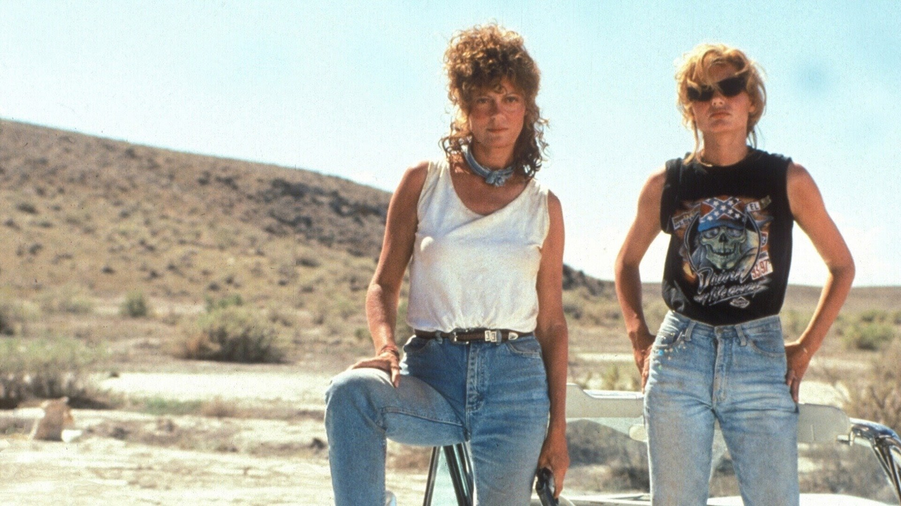12. Booksmart, Olivia Wilde (2019)
Booksmart (2019), dirigida por Olivia Wilde, sigue a dos mejores amigas, Molly y Amy, en su último día de secundaria. La película gira en torno a su deseo de experimentar y divertirse antes de graduarse, pero lo esencial es la relación entre ellas: cómo se apoyan, se confunden y se desafían mutuamente mientras descubren quiénes quieren ser. Las conversaciones van desde planes de futuro hasta inseguridades personales, sin centrarse en intereses románticos masculinos. Con un ritmo ágil, humor inteligente y diálogos llenos de autenticidad, Booksmart muestra la intensidad, la complicidad y los altibajos que caracterizan la amistad femenina, convirtiéndose en un retrato fresco y moderno de la adolescencia y la autoafirmación.

13. Ocean’s 8, Gary Ross (2018)
Ocean’s 8 (2018), dirigida por Gary Ross, sigue a Debbie Ocean y su equipo de mujeres mientras planean un audaz robo en el Met Gala de Nueva York. A lo largo de la película, las conversaciones entre las integrantes del grupo giran en torno a estrategias, habilidades individuales y confianza mutua, en lugar de relaciones románticas con hombres. La narrativa pone en primer plano la cooperación, la astucia y el ingenio femenino, mostrando cómo las mujeres pueden liderar, planear y ejecutar una misión compleja apoyándose unas a otras. Con un estilo elegante, humor y ritmo trepidante, Ocean’s 8 celebra la inteligencia y camaradería femenina en un contexto de aventura y acción.
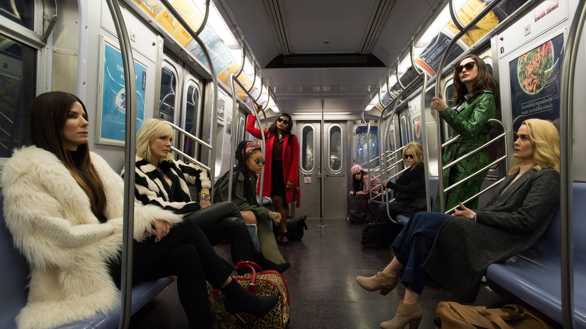R E P R E S E N T A C I Ó N . T R A N S E X U A L
14.The Favourite, Yorgos Lanthimos (2018)
The Favourite (2018), dirigida por Yorgos Lanthimos, explora la compleja dinámica entre la reina Ana y sus consejeras, Sarah y Abigail, en la corte inglesa del siglo XVIII. Las interacciones entre estas mujeres, llenas de intriga, manipulación y momentos de vulnerabilidad, son el eje central de la película. Las conversaciones van desde estrategias políticas hasta emociones personales, mostrando cómo las mujeres ejercen poder, influencia y supervivencia en un mundo dominado por hombres. Con una narrativa oscura, humor negro y actuaciones magistrales, The Favourite ofrece una mirada fascinante sobre la ambición, la rivalidad y la sororidad en contextos inesperados.

15.Clueless, Amy Heckerling (1995)
A través de un estilo fresco y lleno de humor, Clueless (1995), dirigida por Amy Heckerling, ofrece una mirada divertida y sorprendentemente profunda a la vida adolescente femenina en Beverly Hills. La película sigue a Cher, una adolescente que aparentemente tiene todo bajo control, mientras se enfrenta a decisiones sobre amistad, identidad y madurez. Aunque los romances aparecen en la narrativa, el foco real está en las relaciones entre mujeres, especialmente la amistad entre Cher y Dionne. Sus diálogos revelan preocupaciones genuinas, aspiraciones y dudas cotidianas, mostrando cómo las amistades femeninas son un espacio vital para aprender, equivocarse y crecer. Lo que hace que la película destaque es su capacidad para combinar ligereza con momentos de introspección. Cher y Dionne no solo comparten secretos o consejos de moda; también discuten sobre sus valores, sus errores y cómo quieren ser percibidas por el mundo. Esta combinación de humor, observación social y cariño entre amigas crea un retrato completo de la adolescencia femenina, demostrando que las conexiones entre mujeres pueden ser tan complejas, divertidas y transformadoras como cualquier historia romántica, pero con su propia autenticidad y fuerza narrativa.
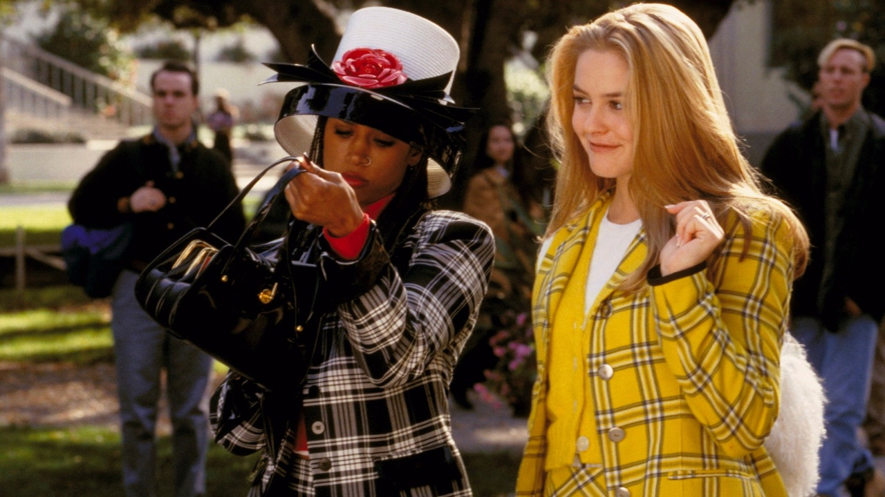16. A League of Their Own, Penny Marshall (1992)
Desde el primer juego, A League of Their Own (1992), dirigida por Penny Marshall, muestra un universo donde las mujeres toman el centro de la acción, desafiando normas sociales y construyendo su espacio en un deporte dominado por hombres. La historia sigue a un grupo de jugadoras de béisbol durante la Segunda Guerra Mundial, explorando no solo su habilidad atlética sino también las relaciones entre ellas, que son el verdadero corazón de la película. Las conversaciones entre las mujeres abarcan desde estrategias de juego hasta preocupaciones personales, pasando por la competencia sana y los lazos de apoyo, creando un retrato complejo y auténtico de la sororidad. A medida que se desarrolla la historia, emergen temas de resiliencia, ambición y cooperación femenina. Cada personaje enfrenta sus propios retos, pero la interacción con sus compañeras permite que se enfrenten juntas a adversidades y descubran su fortaleza individual y colectiva. Con momentos de humor, emoción y verdadero espíritu de equipo, A League of Their Own celebra la capacidad de las mujeres de apoyarse, competir y triunfar juntas, mostrando cómo la amistad y el compañerismo femenino pueden ser tan épicos y significativos como cualquier romance cinematográfico.
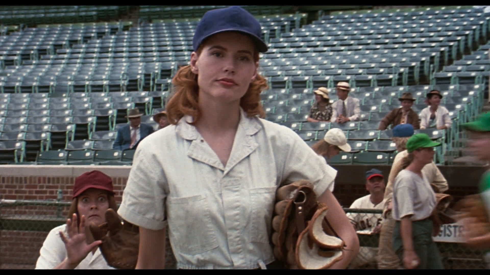17. Sense and Sensibility, Ang Lee (1995)
Desde sus primeros diálogos, Sense and Sensibility (1995), dirigida por Ang Lee, cautiva al espectador con un retrato minucioso de la vida, emociones y aspiraciones de las hermanas Dashwood. La historia se centra en cómo estas mujeres, enfrentando dificultades económicas y sociales, buscan mantener su dignidad, encontrar la felicidad y tomar decisiones significativas en un mundo que restringe su autonomía. Lo central no son los romances masculinos, sino la relación entre las hermanas y otras mujeres de su entorno, quienes comparten confidencias, consejos y momentos de apoyo mutuo, revelando la riqueza de los lazos femeninos en la vida cotidiana. A lo largo de la película, se percibe cómo cada conversación y encuentro contribuye al desarrollo personal de las protagonistas. La narrativa muestra que los vínculos entre mujeres son complejos y fundamentales: a veces tensos, a veces solidarios, siempre transformadores. Con un guion delicado, actuaciones sensibles y un enfoque en la psicología de cada personaje, Sense and Sensibility ofrece una exploración profunda de la amistad, la sororidad y la resiliencia femenina, demostrando que las historias centradas en mujeres pueden ser emocionalmente poderosas, sutiles y llenas de matices sin depender de un romance como eje central.
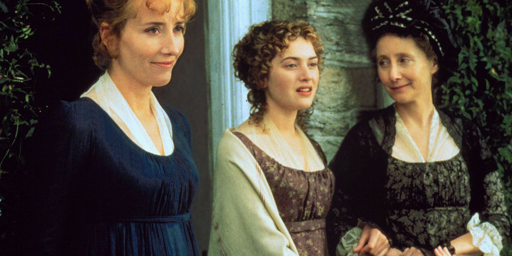.........................................................................................................................................................................................................................................................................................................................
A lo largo de estas películas, desde las hermanas March en Mujercitas, pasando por las científicas de Hidden Figures, hasta Marina en A Fantastic Woman, queda claro que las historias centradas en mujeres pueden ser profundas, diversas y poderosamente inspiradoras. No se trata solo de cumplir criterios o de pasar pruebas simbólicas, sino de reconocer que las mujeres existen, sienten, luchan y crean historias propias, con sus voces y decisiones como motor de la narrativa. Cada diálogo, cada vínculo y cada gesto femenino que hemos explorado en estas cintas nos recuerda que el cine tiene el poder de reflejar la complejidad de la vida de las mujeres y de abrir espacios para que esas historias, a menudo invisibilizadas, sean escuchadas y celebradas. En definitiva, estas películas no solo muestran mujeres hablando, sino mujeres viviendo, actuando y transformando la pantalla con su presencia.